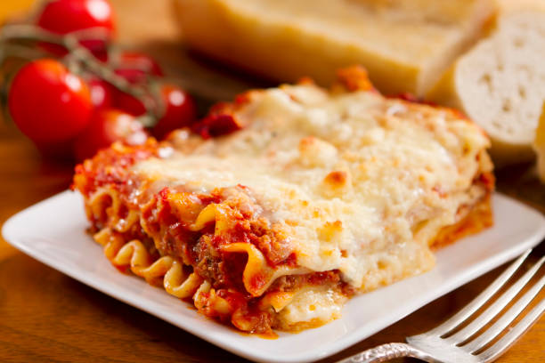

Lasagna Recipe

Descritption:
Lasagna is a classic Italian dish made with layers of pasta sheets, rich meat or veggie sauce, creamy béchamel, and melted cheese, all baked to perfection. It's the ultimate comfort food—hearty, cheesy, and seriously satisfying.
Ingredients:
- Lasagna noodles
- Ground beef or sausage
- Marinara sauce
- Béchamel sauce
- Ricotta cheese
- Shredded mozzarella cheese
- Grated Parmesan cheese
- Garlic
- Onion
- Olive oil
- Salt and pepper
- Fresh basil (optional)
Instructions:
- Preheat your oven to 375°F (190°C).
- Cook the lasagna noodles according to package instructions; drain and set aside.
- In a skillet, heat olive oil over medium heat. Add chopped onion and minced garlic, sauté until translucent.
- Add ground beef or sausage, cook until browned. Drain excess fat.
- Stir in marinara sauce, simmer for 10 minutes. Season with salt and pepper.
- In a separate bowl, mix ricotta cheese with salt, pepper, and fresh basil if using.
- Spread a layer of meat sauce in a baking dish, followed by a layer of noodles, then a layer of béchamel sauce, and a layer of ricotta cheese. Repeat layers until all ingredients are used, finishing with béchamel and mozzarella on top.
- Sprinkle grated Parmesan cheese over the top.
- Bake in the preheated oven for 30-40 minutes until bubbly and golden brown.
- Let it cool for a few minutes before slicing and serving.
Enjoy your delicious homemade lasagna!